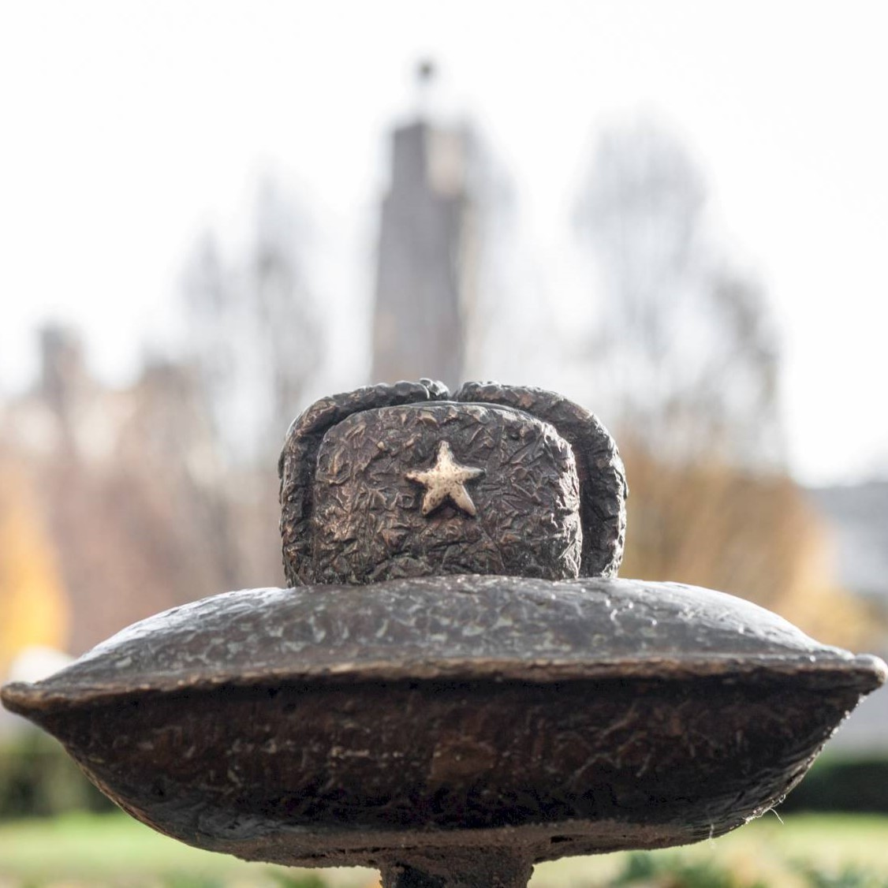
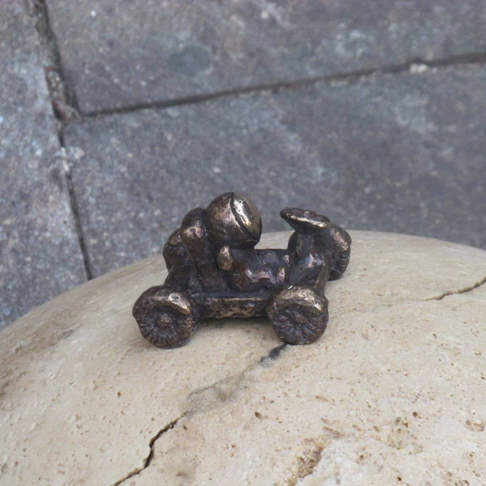

Útikalauz
Források:
M1 metró
M2 metró
2-es villamos
70-es troli
78- as troli
105-ös busz
Neumann János ház
Kossuth Lajos tér
A német megszállás áldozatainak emlékműve
Szabadság tér
Szent István Bazilika
Magyar Állami Operaház